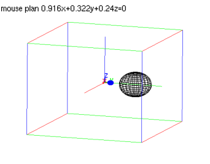
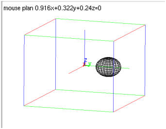

14.14.7 Inversion in space: inversion
See Section 13.15.7 for inversions in the plane.
Given a point P and a real number k, the corresponding
inversion of a point A is the point A′ on the ray
PA satisfying PA·PA′ =
k2. The inversion command creates inversions.
-
inversion takes two mandatory and one optional
argument:
-
P, a point.
- k, the inversion ratio.
- Optionally, G, a geometric object.
- inversion(P,k) returns a new command which
does an inversion about P with a ratio k.
- inversion(P,k,G) returns and draws the inversion of
G.
Examples
-
Input:
| S := sphere([0,1,0],0.5) |
| inver:= inversion(point(0,0,0), 2) |
| color(S,blue),inver(S)
|
Output:

- Input:
inversion(point(0,0,0),2,S)
Output:
